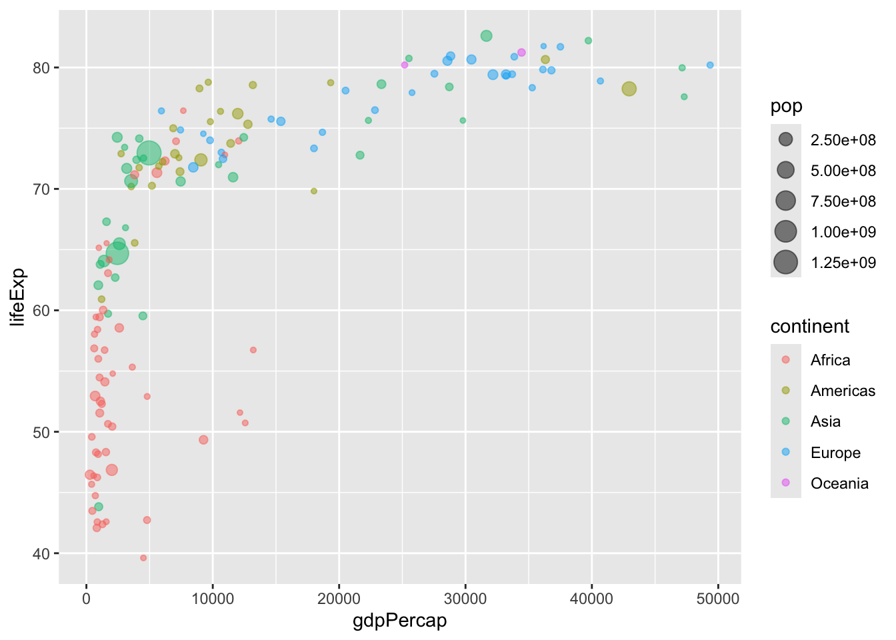
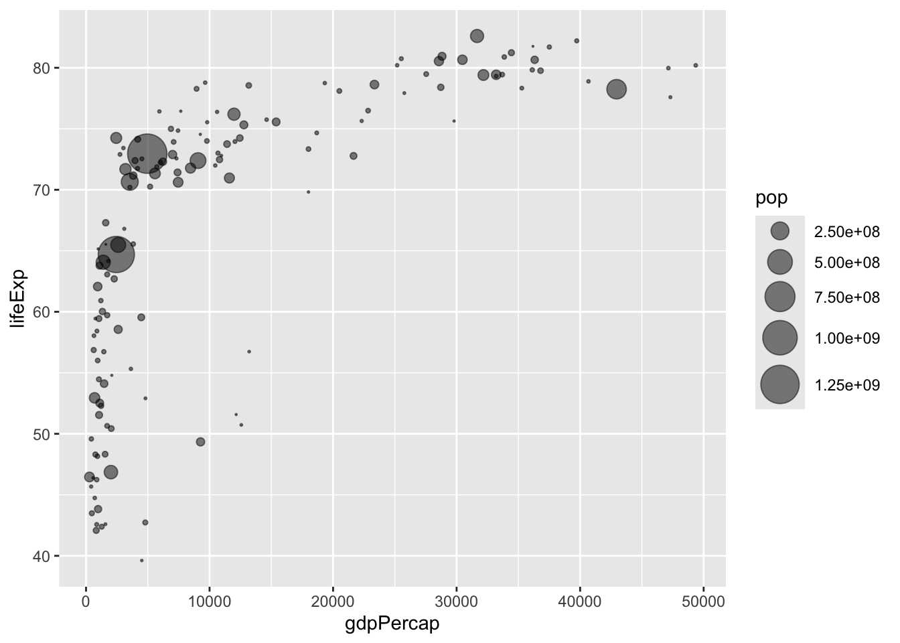

plot(cars)
There are many ways to visualize data in R. One is through the use of a built in function called “base” R - the “plot()” function is part of this.
plot(cars)
A popular package in this area is called ggplot2
Before any add-on package can be used (like ggplot2) it must be installed! Install using the install.packages("ggplot2") command.
Load the package with library(ggplot2) call.
library(ggplot2)
ggplot(cars) +
aes(x=speed, y=dist) +
geom_point()
For “simple” plots like the one above, the base R plot() command is much less code.
ggplot(cars) +
aes(x=speed, y=dist) +
geom_point()+
geom_smooth()`geom_smooth()` using method = 'loess' and formula = 'y ~ x'
Every ggplot has at least 3 layers: - data: data.frame with the data you want to visualize - aes: short for “aesthetics”– mapping of data columns to your plot - geoms: there are tons of ways to shape your data, some basics are geom_plot(), geom_line(), geom_col().
mtcars mpg cyl disp hp drat wt qsec vs am gear carb
Mazda RX4 21.0 6 160.0 110 3.90 2.620 16.46 0 1 4 4
Mazda RX4 Wag 21.0 6 160.0 110 3.90 2.875 17.02 0 1 4 4
Datsun 710 22.8 4 108.0 93 3.85 2.320 18.61 1 1 4 1
Hornet 4 Drive 21.4 6 258.0 110 3.08 3.215 19.44 1 0 3 1
Hornet Sportabout 18.7 8 360.0 175 3.15 3.440 17.02 0 0 3 2
Valiant 18.1 6 225.0 105 2.76 3.460 20.22 1 0 3 1
Duster 360 14.3 8 360.0 245 3.21 3.570 15.84 0 0 3 4
Merc 240D 24.4 4 146.7 62 3.69 3.190 20.00 1 0 4 2
Merc 230 22.8 4 140.8 95 3.92 3.150 22.90 1 0 4 2
Merc 280 19.2 6 167.6 123 3.92 3.440 18.30 1 0 4 4
Merc 280C 17.8 6 167.6 123 3.92 3.440 18.90 1 0 4 4
Merc 450SE 16.4 8 275.8 180 3.07 4.070 17.40 0 0 3 3
Merc 450SL 17.3 8 275.8 180 3.07 3.730 17.60 0 0 3 3
Merc 450SLC 15.2 8 275.8 180 3.07 3.780 18.00 0 0 3 3
Cadillac Fleetwood 10.4 8 472.0 205 2.93 5.250 17.98 0 0 3 4
Lincoln Continental 10.4 8 460.0 215 3.00 5.424 17.82 0 0 3 4
Chrysler Imperial 14.7 8 440.0 230 3.23 5.345 17.42 0 0 3 4
Fiat 128 32.4 4 78.7 66 4.08 2.200 19.47 1 1 4 1
Honda Civic 30.4 4 75.7 52 4.93 1.615 18.52 1 1 4 2
Toyota Corolla 33.9 4 71.1 65 4.22 1.835 19.90 1 1 4 1
Toyota Corona 21.5 4 120.1 97 3.70 2.465 20.01 1 0 3 1
Dodge Challenger 15.5 8 318.0 150 2.76 3.520 16.87 0 0 3 2
AMC Javelin 15.2 8 304.0 150 3.15 3.435 17.30 0 0 3 2
Camaro Z28 13.3 8 350.0 245 3.73 3.840 15.41 0 0 3 4
Pontiac Firebird 19.2 8 400.0 175 3.08 3.845 17.05 0 0 3 2
Fiat X1-9 27.3 4 79.0 66 4.08 1.935 18.90 1 1 4 1
Porsche 914-2 26.0 4 120.3 91 4.43 2.140 16.70 0 1 5 2
Lotus Europa 30.4 4 95.1 113 3.77 1.513 16.90 1 1 5 2
Ford Pantera L 15.8 8 351.0 264 4.22 3.170 14.50 0 1 5 4
Ferrari Dino 19.7 6 145.0 175 3.62 2.770 15.50 0 1 5 6
Maserati Bora 15.0 8 301.0 335 3.54 3.570 14.60 0 1 5 8
Volvo 142E 21.4 4 121.0 109 4.11 2.780 18.60 1 1 4 2Make me a ggplot of the mtrcars dataset using mpg vs disp
library(ggplot2)
ggplot(mtcars) +
aes(x=mpg, y=disp, size=hp) +
geom_point(col="cyan3") To make plots move around: install.packages("ggrepel")
url <- "https://bioboot.github.io/bimm143_S20/class-material/up_down_expression.txt"
genes <- read.delim(url)
head(genes) Gene Condition1 Condition2 State
1 A4GNT -3.6808610 -3.4401355 unchanging
2 AAAS 4.5479580 4.3864126 unchanging
3 AASDH 3.7190695 3.4787276 unchanging
4 AATF 5.0784720 5.0151916 unchanging
5 AATK 0.4711421 0.5598642 unchanging
6 AB015752.4 -3.6808610 -3.5921390 unchangingnrow(genes)[1] 5196colnames(genes)[1] "Gene" "Condition1" "Condition2" "State" ncol(genes)[1] 4table(genes$State)
down unchanging up
72 4997 127 127/5196[1] 0.02444188p <- ggplot(genes)+
aes(x=Condition1, y=Condition2, col=State)+
geom_point()
p
p + scale_color_manual(values=c("blue", "grey","red"))
p + scale_color_manual(values=c("blue", "grey","red")) +
labs(title="Gene Expression Changes Upon Drug Treatment",
x="No Drug Ctrl",
y="Drug")library(gapminder)
library(dplyr)
Attaching package: 'dplyr'The following objects are masked from 'package:stats':
filter, lagThe following objects are masked from 'package:base':
intersect, setdiff, setequal, uniongapminder_2007 <- gapminder %>% filter(year==2007)p2 <- ggplot(gapminder_2007)+
aes(x=gdpPercap, y=lifeExp, color=continent, size=pop)+
geom_point(alpha=0.5)
p2
p3 <- ggplot(gapminder_2007)+
aes(x=gdpPercap, y=lifeExp, color=pop)+
geom_point(alpha=0.8)
p3
p4 <- ggplot(gapminder_2007)+
aes(x=gdpPercap, y=lifeExp, size=pop)+
geom_point(alpha=0.5)
p4p5 <- ggplot(gapminder_2007)+
geom_point(aes(x=gdpPercap, y=lifeExp, size=pop), alpha=0.5)+
scale_size_area(max_size=10)
p5
gapminder_top5 <- gapminder %>%
filter(year==2007) %>%
arrange(desc(pop)) %>%
top_n(5, pop)
gapminder_top5# A tibble: 5 × 6
country continent year lifeExp pop gdpPercap
<fct> <fct> <int> <dbl> <int> <dbl>
1 China Asia 2007 73.0 1318683096 4959.
2 India Asia 2007 64.7 1110396331 2452.
3 United States Americas 2007 78.2 301139947 42952.
4 Indonesia Asia 2007 70.6 223547000 3541.
5 Brazil Americas 2007 72.4 190010647 9066.q <- ggplot(gapminder_top5) +
geom_col(aes(x=coubntry))